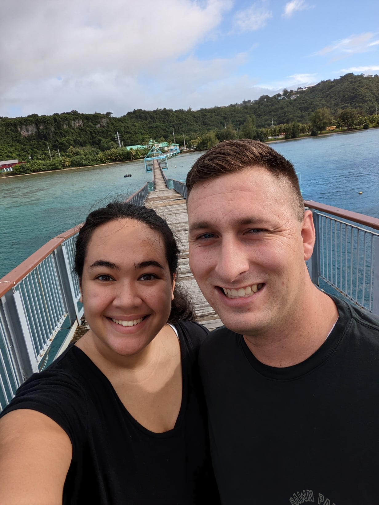
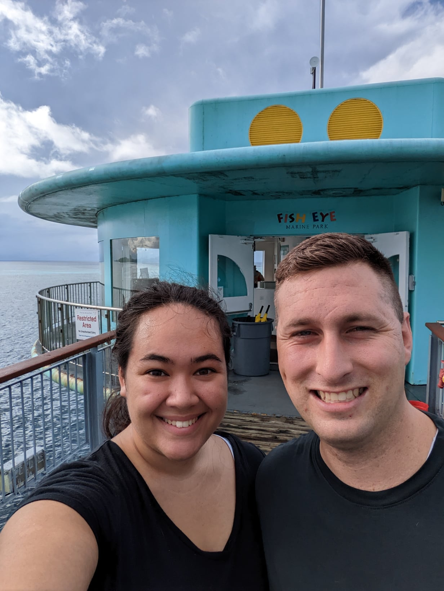
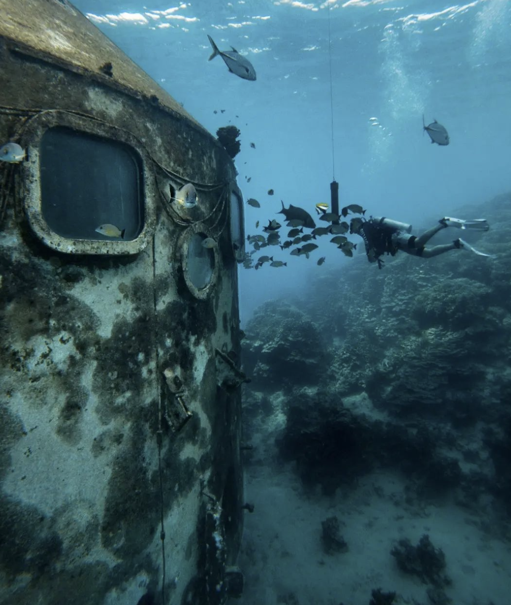

For an underwater adventure like no other, descend into the depths of the Fish Eye Underwater Observatory and marvel at Guam's vibrant marine life. Explore coral reefs teeming with colorful fish, encounter majestic sea turtles, and witness the beauty of the underwater world up close. It's a captivating experience that will leave you in awe of Guam's natural wonders.
1. The fisheye boardwalk is a very scenic destination.
2. The entrance to the underwater Observatory, inside there are discriptions of some of the sea life that you can encounter on Guam.
3. An even more emersive way to interact with the sea life at this marine park is to scuba dive, this is where a lot of beginer divers can go due to the safety of this shallow crater within the reef.